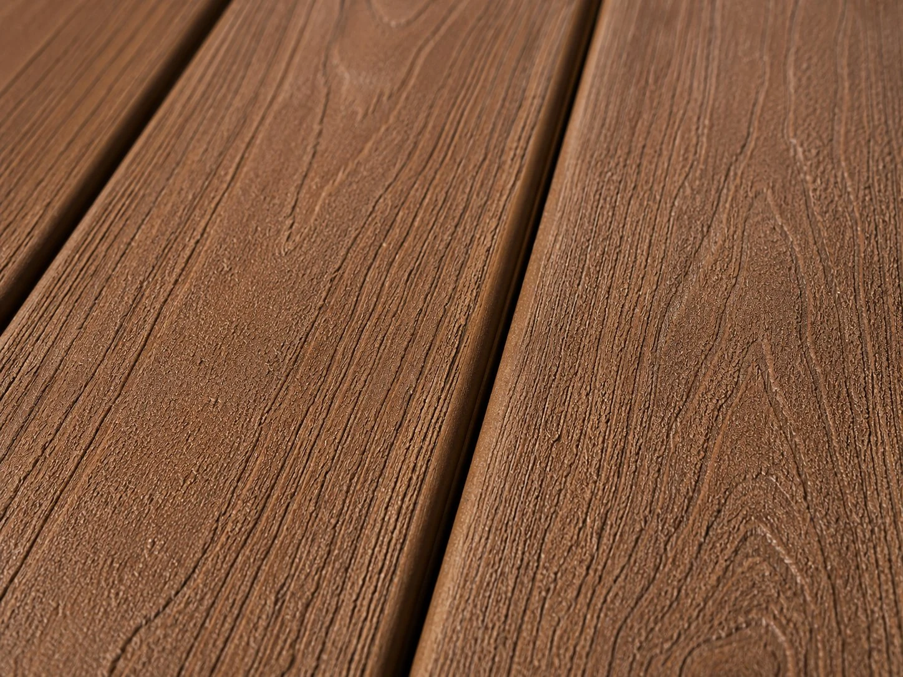
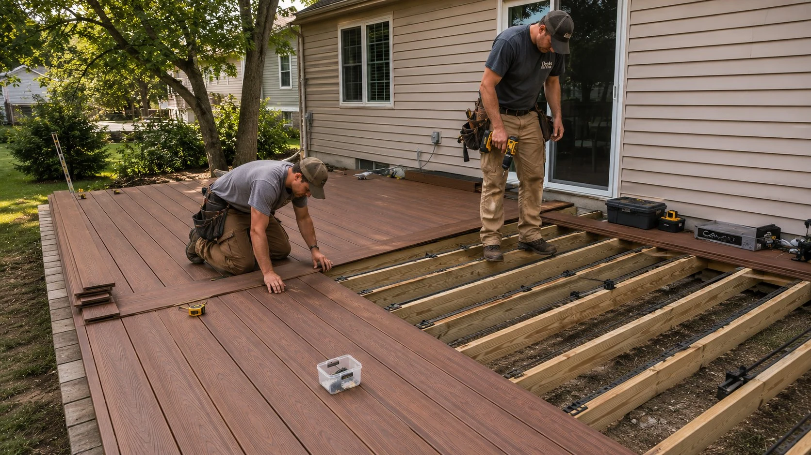

Trex, TimberTech, Fiberon, and Azek composite decking — built on a pressure-treated frame, engineered to handle Ohio's freeze-thaw cycles without warping, splintering, or requiring seasonal maintenance.
Free Estimate — No Obligation
(740) 527-0222Mon–Fri 7am–6pm | Sat 8am–2pm
Get Free EstimateComposite decking has become the default choice for Licking County homeowners who plan to stay in their homes long-term. The math is straightforward: a pressure-treated wood deck needs staining or sealing every 2–3 years, at a cost of $500–$1,500 per application. A composite deck needs essentially nothing beyond an occasional wash with a garden hose.
Beyond maintenance, composite performs better in Ohio's specific climate. The freeze-thaw cycles that run from November through March are hard on wood — they cause expansion and contraction that leads to checking, splitting, and fastener blow-out over time. Cap-stock composite is engineered to be dimensionally stable through those cycles.
In our experience with Licking County homes, composite decking pays for the price difference within 8 to 10 years when you factor in maintenance costs. Out here in Pataskala and New Albany, where a lot of our customers plan to be in their homes for 20+ years, it's almost always the right call.

We install all major composite decking lines. At your estimate we'll walk through the differences in price, color options, and warranty terms.
Trex Enhance, Select, and Transcend lines at a range of price points. Transcend is the premium option — excellent colors, cooler surface temperatures, and the strongest warranty in the Trex lineup.
TimberTech offers both composite and full PVC (AZEK) decking. AZEK contains no wood fiber — completely impervious to moisture and an excellent choice for near-grade decks.
Fiberon offers excellent quality at a lower price point than Trex or TimberTech. Good color selection and a solid warranty. A great option for budget-conscious homeowners.
Azek PVC decking is the premium option for areas with high moisture, near-grade installation, or pool decks. No wood fiber means it won't absorb moisture, grow mold, or swell.
Made from reclaimed bamboo and recycled plastics. Good option for homeowners prioritizing sustainability without sacrificing durability.
Uses a mineral-based composite core that performs exceptionally well in direct sun — cooler surface temperatures than standard composite.
The composite boards are what you see, but the quality of a deck is really determined by what you can't see — the framing, the footings, the ledger connection, and the hardware.
Every composite deck we build starts with concrete piers drilled below Ohio's 32-inch frost line. We use pressure-treated lumber rated for ground contact throughout the frame. Composite boards don't rot, but the framing underneath them can — and that's where most composite deck failures originate.
We see a lot of composite decks in Licking County that look great on the surface but have pressure-treated framing that wasn't rated for ground contact, or footings that don't meet frost depth. That's the difference between a deck that lasts 30 years and one that fails in 8.

What Licking County homeowners ask us before getting started.
(740) 527-0222 Mon–Fri 7am–6pm | Sat 8am–2pmWe come to your property, measure the space, discuss your material options, and provide a written estimate — no pressure, no obligation. We respond within one business day.
We respond within one business day.
Free estimate, no obligation. Serving all of Licking County, Ohio.